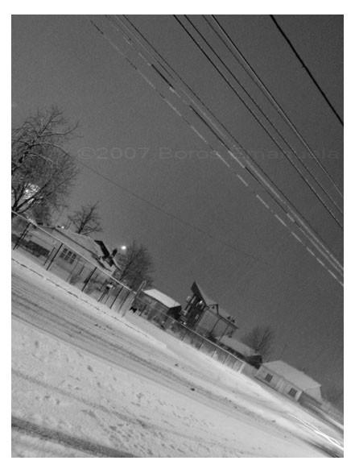
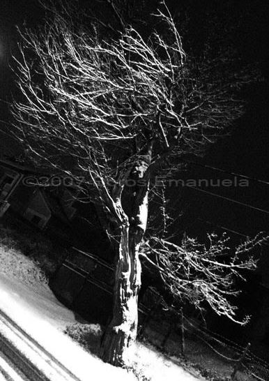
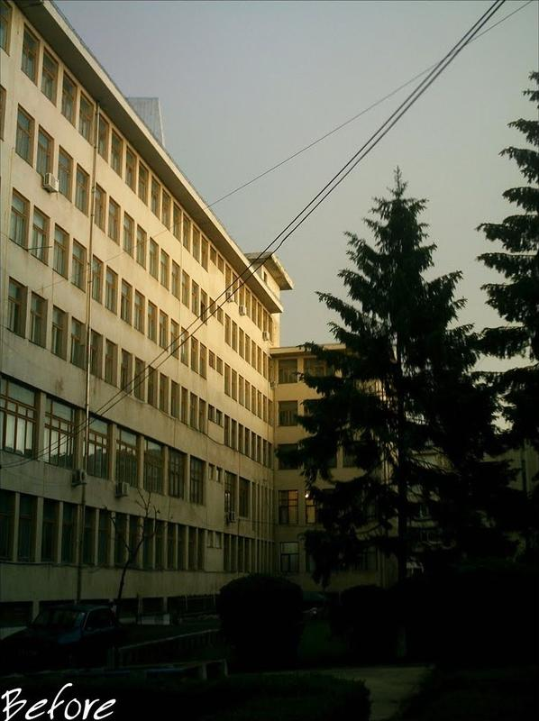
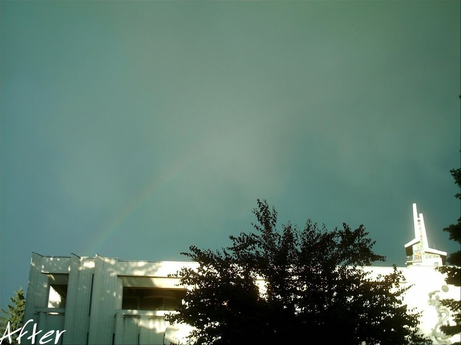

Early photographs first published online under the name RosuAprins. Two winter nights in snow and two images titled Before and After. The original gallery is no longer online; these four survived as reposts.



